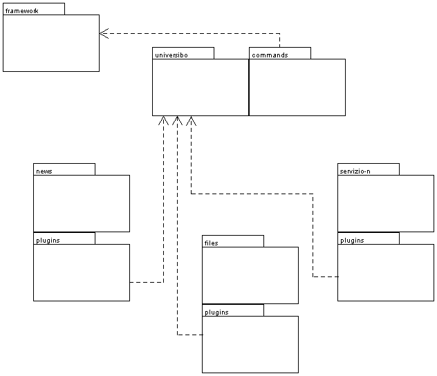

Dall'analisi del problema si delinea la seguente architettura dell'applicazione.
Prima di tutto ci si porra il problema di costruire un framework che si occupi
della separazione 3-tier (si noti l'analogia tra i 3-tier e il Model-View-Control)
dell'applicazione e guidi il successivo sviluppo dei servizi secondo questa
logica.
Sulla base di questo framework generico si passerà alla costruzione della
nostra applicazione con la definizione del suo dominio e spazio concettuale.
Infine si vuole fare in modo di poter agganciare i servizi all'applicazione
come dei plugin.

Sarà compito soprattutto del framework integrare e rendere disponibili
componenti di utilità per l'applicazione, quindi si rende subito opportuna
la possibilità di utilizzare componenti OpenSource già largamente
diffusi per le funzionalità del livello di presentazione e di persistenza
dei dati.
La logica applicativa dovrà naturalemente essere costruita ad hoc e farà
parte della nostra specifica applicazione, quindi sarà separata in un
differente package.
Si è deciso infine di separare i servizi in differenti package oltre
che per la naturale struttura logica anche per poter responsabilizzare diverse
persone del team di sviluppo su un ambito ristretto.
Sarà cura dei progettisti dei servizi rendere lo spazio concettuale dei
servizi il più possibile indipendente dallo spazio concettuale dell'applicazione
e collegare le parti tramite i comandi del servizio (plugin)